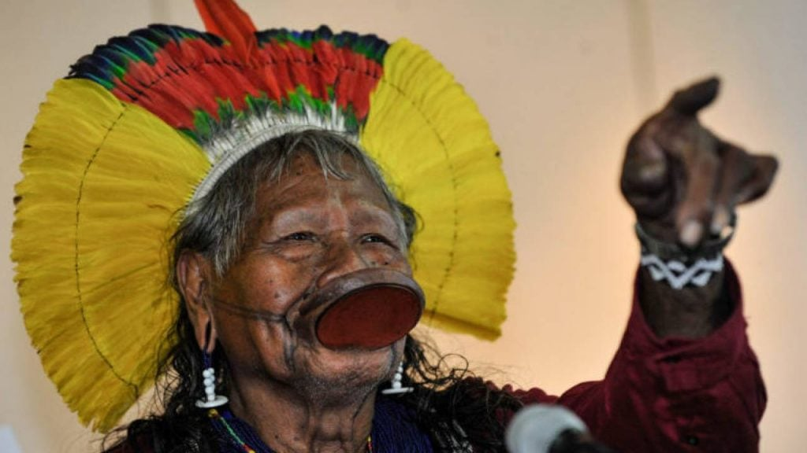

Cacique Raoni Metuktire - Povo Kayapó
O embaixador da floresta em imagens. Sua luta incansável pela Amazônia e pelos direitos indígenas.

Em defesa da demarcação.

O cocar em destaque.
Mapulu Kamayurá - Povo Kamayurá
Liderança feminina essencial na preservação da cultura e da saúde no Alto Xingu.

Guardando as tradições.

No coração da aldeia.
Wisió Kaiabi - Povo Kaiabi
A cacique que luta contra a contaminação dos rios e pela soberania do território.

Voz da resistência.
Outras Lideranças e Ações no Xingu
Esta seção pode conter fotos de jovens líderes, eventos culturais como o Kuarup, ou manifestações políticas.